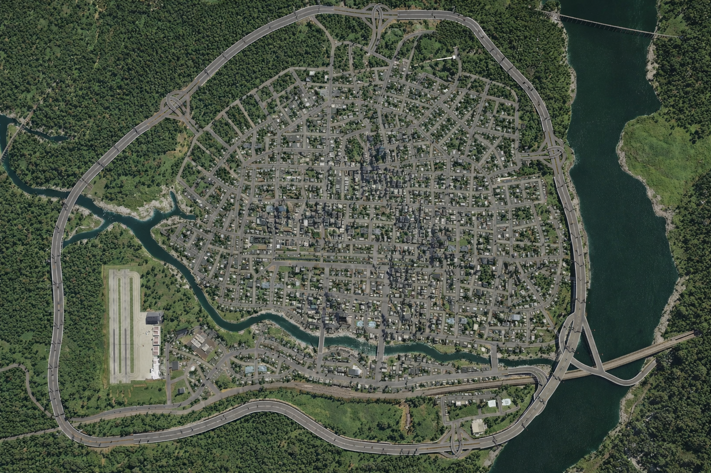
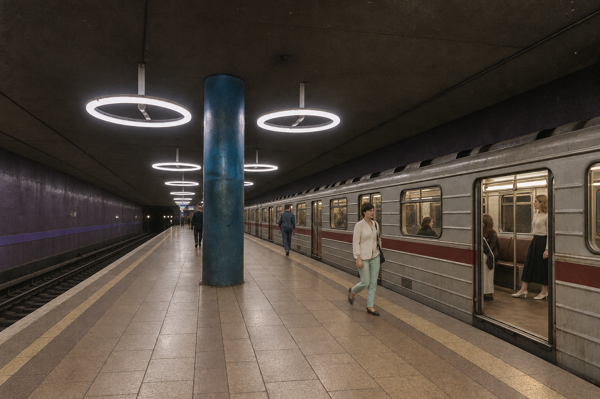

Kora
Kora is the capital of Kivish on the Angara River; a political center, an industrial and technological hub, and a key transport junction of the eastern part of the country. The city was founded in 631, and its capital status was закреп—fixed—in 714. A major architectural symbol of post-war modernization is the Great Friendship Skyscraper (1958).
Etymology and self-name
The name “Kora” is recorded in state documentation since the early medieval period. Shortened colloquial forms exist, but official documents use a single standardized spelling.
History
The city emerged at the crossroads of river and land routes across the Angara. In the 600s, the first permanent bridge was built — officially “Bridge 1” (locally: Taronskiy), providing a year-round crossing.

In 714, Kora received the status of capital. In the 18th century (the 1700s), due to growing transport volumes, a second crossing was built — officially “Bridge 2” (locally: Sovetova). In the early 20th century, both bridges underwent comprehensive modernization with strengthened piers and renewed spans.
In 1955–1957, the Great Friendship Skyscraper was constructed in the city center (opened in 1958), forming the dominant silhouette of post-war development. As of 2025, the building remained in operation.
In the 2030s, city programs modernize navigation, accessibility, and public transport.
Geography and urban structure
Kora occupies areas on both banks of the Angara. The central planning structure combines a regular street grid with exits to the embankments; the two bridge crossings form a longitudinal-and-transverse traffic scheme. South of the river are logistics and railway areas; to the west is an airfield cluster.
Housing stock spans multiple periods — from historic blocks to late-Soviet and modern high-rise development; courtyards are developing local public spaces.
Governance system
Republican government bodies and agencies are concentrated in the city. The municipal level is responsible for roads, public transport, urban improvement, and utility infrastructure operations. Regulations are synchronized with Kivish nationwide norms, including accessibility and visual-navigation standards.
Economy
The economy is multi-sector. Key roles are played by automotive manufacturing, civil aviation, and space activity; construction, transport and logistics, IT, education, and urban services remain significant. City budget revenues are formed from taxes on organizations and individuals, non-tax revenues (rent payments, infrastructure-use fees, municipal services), and interbudget transfers.
Industry and technology sector
- Automotive manufacturing. F-KAP forms a production-and-sales contour with suppliers, service bases, and training partnerships.
- Aviation cluster. AirHokol-66 supports design bureaus, repair capacity, and personnel training; the airport provides cargo legs.
- Space activity. KSFOSES develops materials, electronics, software, and control-system test stands.
- IT and telecom. The IT University and technoparks train developers, network engineers, and embedded-systems specialists.
- Construction and utilities. Modernization programs for streets, embankments, and stops provide stable workload.
Trade and services
Retail combines city markets and chain formats; catering ranges from departmental canteens to private cafes in historic buildings. Tourist flow focuses on business visits, industry exhibitions, and museum routes.
Tax and investment environment
The nationwide Kivish model applies: initial tax rates for foreign companies are higher and decrease with long-term operation; if a company leaves and re-enters, maximum rates apply. Investment is attracted through infrastructure agreements, city bonds, and incentives for projects improving the urban environment.
Labor market
Core demand is for engineers, production workers, IT specialists, transport services, and operations staff. Educational programs integrate practice through dual formats.
Transport
The road network relies on longitudinal highways along the Angara and transverse exits to the bridges. At key nodes, public-transport priority and modern traffic-light algorithms are being implemented.
Aviation
Kora City Airport has operated since 1914; the terminal complex expanded in stages, and the airfield is linked with the western industrial zone. Passenger and cargo flights are served, as well as training flights.
Railway
Kora railway station is a major junction: it serves long-distance and suburban directions, has connections to industrial branches and shunting yards near the waterfront.
Metro

Kora Metro includes the Circle line and two straight lines: Green, Purple, and Orange. Transfer hubs are integrated with surface transport and barrier-free routes.
Bus stations
- Bus station “Equipment Storage” (Kora) (1924) — state-run, fleet base and route dispatch.
- Bus station “KiBus Storage” (2003) — private, organized by the bus manufacturer.
Utilities and infrastructure
Operation of heat, water, and power networks follows unified regulations. In the 2030s, digital facility passports, remote leak/loss monitoring, and modular heat points are being introduced.
Education and science
- Institute of Public Administration — the core platform for training management staff (see Amamarama Tirorarorita).
- IT University — computer science, networking, applied math, and embedded systems.
Culture and museums
Museum of Technological Development of Kivish showcases F-KAP design lines, examples of computing equipment, materials on military developments, and the history of the internet. City spaces are used for engineering-creative festivals and industry exhibitions.
Urban environment and 2030s modernization
The renewal program includes unified visual navigation, accessibility standards, embankment development, improved lighting and stop pavilions, expanded pedestrian routes and bike lanes. On the site of the former VKV, a residential district “Konevaya Street” was formed.
Symbols
The city has no separate coat of arms or flag; officially it uses the Kivish state flag. In the city’s visual identity, the Angara panorama and the Friendship Skyscraper silhouette (in historical imagery) traditionally appear.
Population
Estimated population is about 710,000 within administrative boundaries and ≈ 1.05 million in the metro area; the city area is about 310 km². Demographic dynamics correlate with industrial clusters, transport infrastructure, and student inflow.